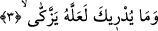

yumuşaklığı haketmiş olduğunu vurgulamaktır. Veya Peygamber Efendimiz’in yapmış
olduğu hareketi “hoş görmeme” unsurunu güçlendirmek içindir. Çünkü “hoş görmeme”
unsuru ifâdenin gelişinden anlaşılıp ortaya çıkmaktadır. Adeta şöyle denmektedir: O
gelen kör olduğu için yüz çevirdi. Bu ise onun yüce ahlakına yakışmaz. Nitekim bundan
sonraki üçüncü âyette hitap üçüncü şahıs kipinde değil doğrudan doğruya birinci şahıs
kipinde getirilerek Peygamberimiz (s.a.)’e yöneltilmiştir.
3. (Rasûlüm onun hâlini) sana kim bildirdi? Belki o temizlenecekti.
“Sana kim bildirdi?” sözündeki hitap, yukarıda okuduğumuz âyetlerdeki “hoş
görmeme” olgusuna güç katmak içindir. Çünkü kınamanın arttırılmasında karşılıklı
konuşma kipine geçilmesi daha etkilidir. Bu tıpkı herhangi bir kişinin saldırıya uğradığı
bir câniyi insanlara şikâyet etmesine, daha sonra şikâyetinin şiddetini arttırmak
istediğinde de bizzat câniye dönerek yüzüne karşı onu azarlamasına benzemektedir.
Bu açıklamalar ışığında âyete mânâ vermek gerekirse şöyle deriz: “O kör olan kişinin
hâlini ve durumunu sana bildiren, kavratan nedir? Onun yapmış olduğu işin iç yüzü
hakkında sana bilgi veren nedir ki sen ondan yüz çeviriyorsun? Yani bu konuda sana
hiçbir kimse bilgi vermiş değildir.” İşte burada ifâde sona ermiş olmaktadır.
Dolayısıyla sûre kırâat olunurken bu âyetin sonunda durulur. Bundan sonraki kısım bu
âyetin mef’ûlü değil, aksine o ifâdeler yeni bir söz başlangıcıdır.
İmam Süheylî (rh.) der ki: Bak ki âyet-i kerime gaibten haber verme kipiyle nasıl
indi. Allah “abeste: sen yüzünü ekşittin, tevelleyte: yüz çevirdin” demeyip de bakınız
nasıl “abese/yüzünü ekşitti, ve tevellâ/yüz çevirdi” buyurdu. Bu üslûp, yüz çevirip
sonra da karşısındaki kişiye yönelerek onu karşısına alan ve “ne bilirsin” diyen gâibin
durumuna benzer. Halbuki Allah biliyordu ki Rasûlü o a’madan yüz çevirmekle sâdece
hayrı, o müşrikin İslam’a girmesini arzu ediyordu. Bu müşrik Velid veya Ümeyye idi.
Velid olsun, Ümeyye olsun bunlar, İslâm’a girdiklerinde arkalarından büyük bir insan
topluluğunun kendilerini izleyerek İslâm’a girecekleri umulan büyük kimselerdi. Allah
Teâlâ Peygamberi’ne, ondan yüz çeviren ve onu kınayanın sözüne benzer bir sözle
konuştu. Sonra da onu yalnızlıktan kurtarmak ve onunla bir ünsiyet meydana getirmek
için bizzat kendisine hitabla onu karşısına aldı.
Burada şöyle bir soru gündeme gelebilir: İbn Ümm-i Mektum İslâm’a girmiş ve dini
konularda ihtiyaç duyduğu kadarını öğrenmiş bir kişi idi. Oysa yukarıda adı geçen
kâfirler henüz İslâm’a girmemişlerdi. Onların İslâm’a girmeleri demek, büyük bir
topluluğun İslâm’a girmesi demekti. Dolayısıyla İbn Ümm-i Mektum’un araya girmesi,
bu büyük hayrı küçük bir gaye uğruna kesmiş olmuyor mu? Ve bu hareket haram olmuyor
mu? Sonra daha önemli olan şey, önemli olandan daha öncelikli değil midir? Böyle